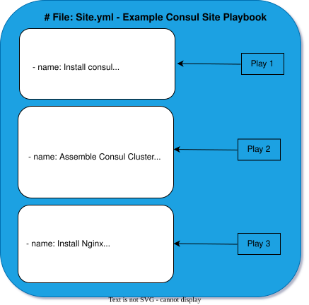
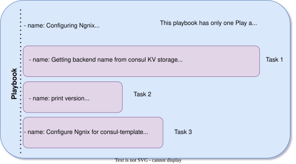

Host
[frontend_servers]
reactjs_one ansible_host=192.168.1.200 ansible_user=ubuntu ansible_ssh_private_key=~/.ssh/id_rsa
ansible -i hosts frontend_servers -m ping
ansible.cfg
[defaults]
host_key_checking = False
inventory = ./hosts
reactjs.yaml
---
- hosts: frontend_servers
vars:
project_path: /var/www
repository: gitlab.com/danpoznanski/example.git
tasks:
- name: "Yarn | GPG"
apt_key:
url: https://dl.yarnpkg.com/debian/pubkey.gpg
state: present
- name: "Yarn | Ensure Debian sources list file exists"
file:
path: /etc/apt/sources.list.d/yarn.list
owner: root
mode: 0644
state: touch
- name: "Yarn | Update APT cache"
apt:
update_cache: yes
- name: Install the packages YARN, NPM, NodeJS, Nginx
apt:
pkg: ['yarn','npm','nodejs','nginx']
- name: Delete the html file
file:
path: "{{project_path}}/html"
state: absent
- name: Set some variable
set_fact:
release_path: "{{ project_path }}/releases/{{ lookup('pipe','date +%Y%m%d%H%M%S',) }}"
current_path: "{{ project_path }}/html"
- name: Create project path
file:
dest={{ project_path }}
mode=0755
recurse=yes
state=directory
- name: Retrieve current release folder
command: readlink -f html
register: current_release_path
ignore_errors: yes
args:
chdir: "{{ project_path }}"
- name: Create Release folder
file:
dest={{ release_path }}
mode=0755
recurse=yes
state=directory
- name: Clone the repository
git:
repo: "{{ repository }}"
dest: "{{ release_path }}"
- name: YARN install dependencies
command: yarn install
args:
chdir: "{{ release_path }}"
- name: Yarn build
command: yaen build
args:
chdir: "{{ release_path }}"
- name: Update symlink
file:
scr={{ release_path }}/build
dest={{ current_path }}
state=link
run playbook -b or --become its sudo
ansible-playbook -b reactjs.yaml -vv
delete files in instance
ansible nginx_servers -m command -a "rm -rf <files>" -b
Inventory Parameters
ansible_user - root/administrator
ansible_ssh_private_key
ansible_connection - ssh/winrm/localhost
ansible_port - 22/5986
ansible_ssh_pass - Password
hosts (ini format)
[frontend_servers]
reactjs_1 ansible_host=54.174.113.174 ansible_user=ubuntu ansible_ssh_private_key=~/.ssh/frontend_servers.pem
reactjs_2 ansible_host=54.174.1134.175 ansible_user=ubuntu ansible_ssh_private_key=~/.ssh/frontend_servers.pem
[db_servers]
db_1 ansible_host=database1.example.com ansible_user=ubuntu ansible_ssh_private_key=~/.ssh/database_servers.pem
db_2 ansible_host=database2.example.com ansible_user=ubuntu ansible_ssh_private_key=~/.ssh/database_servers.pem
[backend_servers]
ba_1 ansible_host=server1.example.com ansible_user=ubuntu ansible_ssh_private_key=~/.ssh/backend_servers.pem
ba_2 ansible_host=server2.example.com ansible_user=ubuntu ansible_ssh_private_key=~/.ssh/backend_servers.pem
[all_servers:children]
frontend_servers
db_servers
backend_servers
Simple command group
ansible frontend_servers -a "uname -a"
ansible frontend_servers -m setup
ansible frontend_servers -m shell "ss -tlpn"
The -b flag stands for “become” when you run an ansible playbook with this flag it allows you to become another user typically a superuser like root
ansible frontend_servers -m apt -a 'name="net-tools"' -b
AWS and Ansible
Install module
ansible-galaxy collection install community.aws
Pipe json format
ansible localhost -m community.aws.ec2.instance_info -a 'region=us-east-1 filters=tag:Name="WebServer in Auto Scaling Group"'| jq
before if command not work
ANSIBLE_LOAD_CALLBACK=true
ANSIBLE_STDOUT_CALLBACK=json
Ansible Ad-Hoc commands
ansible nginx_servers -m user -a "name=ansible group=admin" -b
Ansible modules
apt
file
service
template
ansible_doc module_name
Playbook
ansible_users.yaml
---
- host: all
vars:
- users:
- ansible
- aakilin
tasks:
- name: "Ensure the ansible account exist"
users:
name: "{{ item }}"
groups: ["admin,sudo"]
shell: /bin/bash
loop: "{{ users }}"
tags: create_user_accounts
- name: "Ensure authorized keys created"
autorized_key:
user: "{{ item }}"
key: "{{ lookup('file', 'files/'+item+'.pub') }}"
loop: "{{ users }}"
- name: "Allow sudo users to witchout password"
lineinfile:
dest: "/etc/sudoers"
state: "present"
regexp: "^sudo"
line: "%sudo ALL=(ALL:ALL) NOPASSWORD:ALL"
- name: "Disable password authentication"
lineinfile:
dest="/etc/ssh/ssh_config"
regexp="^PasswordAuthentication no"
state="present"
backup="yes"
notify:
- restart ssh
handlers:
- name:
service:
name=ssh
state=restarted
ansible-playbook ansible_user.yaml --syntax-check
no change in servers
ansible-playbook ansible_user.yaml --check
hosts
[frontend_servers]
reactjs_2 ansible_host=54.174.113.174 ansible_user=ubuntu ansible_ssh_private_key=~/.ssh/id_rsa
reactjs_3 ansible_host=54.198.81.171 ansible_user=ubuntu ansible_ssh_private_key=~/.ssh/id_rsa
create reactjs.yaml
---
- hosts: frontend_servers
vars:
project_path: /var/www
repositiry: https://gitlab.com/asomirl/skillbox-deploy-blue-green.git
packages:
- yarn
- npm
- nodejs
tasks:
- name: "Yarn | GPG"
apt_key:
url: https://dl.yarnpkg.com/debian/pubkey.gpg
state: present
- name: "Yarn | Ensure Debian sources list file exists"
file:
path: /etc/apt/sources.list.d/yarn.list
owner: root
mode: 0644
state: touch
- name: "Yarn | Ensure Debian package is in sources list"
lineinfile:
dest: /etc/apt/sources.list.d/yarn.list
regexp: 'deb http://dl.yarnpkg.com/debian/ stable main'
line: 'deb http://dl.yarnpkg.com/debian/ stable main'
state: present
- name: "Yarn | Update APT cache"
apt:
update_cache: yes
- name: Install the packages YARN, NPM, NodeJS, Nginx
apt:
pkg: " {{ item }}
loop: " {{ packages }}"
tags: install_packages
- name: Remove Nginx
apt:
name: nginx
state: absent
tags: remove_nginx
- name: Stop service Nginx
ansible.builtin.systemd:
name: nginx
state: stopped
- name: Delete the html file
file:
path: "{{ project_path }}/html"
state: absent
- name: Set some variable
set_fact:
release_path: "{{ project_path }}/releases/{{ lookup('pipe','date +%Y%m%d%H%M%S') }}"
current_path: "{{ project_path }}/html"
tags: start_yarn
- name: Create project path
file:
dest={{ project_path }}
mode=0755
recurse=yes
state=directory
- name: Retrieve current release folder
command: readlink -f html
register: current_release_path
ignore_errors: yes
args:
chdir: "{{ project_path }}"
- name: Create Release folder
file:
dest={{ release_path }}
mode=0755
recurse=yes
state=directory
- name: Clone the repository
git:
repo: "{{ repositiry }}"
dest: "{{ release_path }}"
- name: Add IP address of instance to main site
replace:
path: "{{ release_path }}/src/App.js"
regexp: 'Test of revert'
replace: '{{ ansible_default_ipv4.address }}'
backup: yes
- name: Install packages based on package.json.
npm:
path: "{{ release_path }}"
- name: npm install
command: "npm install"
args:
chdir: "{{ release_path }}"
- name: Start application
command: "nohup yarn start &"
args:
chdir: "{{ release_path }}"
environment:
PORT: 80
async: 1000
poll: 0
tags: start_yarn
Roles
/etc/ansible/roles
[defaults]
host_key_checking = False
inventory = ./hosts
roles_path = ./roles
for create roles
ansible-galaxy init <name_role> -p .
ansible tree
ansible-inventory --graph
ansible tree
ansible-inventory --graph --vars
See Setup
ansible reactjs_servers -m setup
nginx.yaml
---
- hosts: nginx_servers
vars:
nginx_vhosts:
- listen: "80
service_name: "react.akilin.com"
state: "present"
template: " {{ nginx_vhost_template }}
filename: "react.akilin.com.conf"
extra_parameters: |
location / {
proxy_pass http://172.31.93.89:80 # http://{{ hostvars['reactjs1']['ansible_default_ipv4']['address']}}:80;
proxy_set_header X-Forwarded-Host $host;
roxy_set_header X-Forwarded-Server $host;
roxy_set_header X-Forwarded-For $proxy_add_x_forwarded_for;
}
pre_tasks:
- name: Ensure that the default nginx symlink is absent
file:
path: "/etc/nginx/sites-enabled/default"
state: absent
roles:
- role: nginx
Group vars
group_vars
host_vars
Template
template:
server {
listen {{ http_port }};
server_name {{ server_name }};
}
location / {
proxy_pass htt://{{ ip }}:{{ port }}/;
}
}
Variables
http_port=80
server_name=react.myweb.com
ip=75.60.230.172 port=80
Results:
server {
listen 80;
server_name react.myweb.com;
}
location / {
proxy_pass http://75.60.230.172:80/;
}
}
work with lines
I love {{ language }} => I love Python
I love {{ language | lower }} I love python
I love {{ language | upper }} I love PYTHON
I love {{ language | replace("Python", "Java") }} I love Java
I love {{ language }} {{ version | default("3.9") }} => I love Python 3.9
{{ ["I", "love", "Python"] | join(" ") }} => I love Python
Ansible Test
tasks:
- service:
name: foo
state: started
enabled: yes
roles:
- webserver
tasks:
- script: verify.sh
check_mode: no
test port
tasks:
- wait_for:
host: "{{ inventory_hostname }}"
port: 22
delegate_to: localhost
test url
tasks:
- action: uri=http://www.example.com return_content=yes
register: webpage
- fail:
msg: 'service in not happy'
when: "'AWESOME' not in webpage.content"
test with stat files
tasks:
- stat:
path: /path/to/something
registry: p
- assert:
that:
- p.stat.exits and p.stat.isdir
test with assert files
tasks:
- shell: /usr/bin/some-command --parameter value
register: cmd_result
- assert:
that:
- "'not ready' not in cmd_result.stderr"
- "'gizmo enabled' in cmd_result.stdout"
Molecule
Molecule - test your role
dependency: Pull dependencies from ansible-galaxy if the role requires them. lint: Check all the YAML files with yamllint. cleanup: Executes the cleanup.yml playbook if exists. destroy: If there is a VM with the same name running, destroy it. syntax: Check the role with ansible-lint. create: Create the VM. prepare: Executes the prepare.yml playbook, which brings the host to a specific state. converge: Executes the converge.yml playbook, which runs the role. idempotence: Molecule runs the playbook a second time to check for idempotence. verify: Run the tests defined in the tests directory. cleanup: Executes the cleanup.yml playbook if exists. destroy: Destroy the VM.
install python and packets
sudo apt update
sudo apt install -y python3-pip libssl-dev
pip install molecule
python3 -m pip install --user molecule
python3 -m pip install --user molecule ansible-lint
for check version
molecule-version
Happy way init role
molecule init role myrole -d delegated
Default Catalog
cd myrole/molecule/default/&& ls -l
converge.yml
molecule.yml
verify.yml
test configuration for virtualbox
vagrant:
platforms:
- name: ubuntu
box:
ubuntu/trusty32
providers:
- name:
virtualbox
type: virtualbox
options:
memory:
512
Molecule AWS roles
install
pip install molecule-ec2
Create a scenario With a new role
molecule init role -d ec2 my-role
Example
---
dependency:
name: galaxy
driver:
name: ec2
platforms:
- name: instance
image_owner: "099720109477"
image_name: ubuntu/images/hvm-ssd/ubuntu-bionic-18.04-amd64-server-*
instance_type: t2.micro
vpc_subnet_id: <your-aws-vpc-subnet-id>
tags:
Name: molecule_instance
provisioner:
name: ansible
verifier:
name: ansible
molecule test
cd tasks
nano main.yml
---
- name: Ensure nginx installed
package:
name: nginx
state: present
cd defaults
nano verify.yml
- name: Verify
hosts: all
tasks:
- name: Check nginx binary
stat:
path: "/usr/bin/nginx"
register: this
failed_when: "not this.stat.exists"
mol converge
Ansible Lint
install ansible lint to ubuntu
apt instal ansible-lint
collection/
├── docs/
├── galaxy.yml
├── meta/
│ └── runtime.yml
├── plugins/
│ ├── modules/
│ │ └── module1.py
│ ├── inventory/
│ └── .../
├── README.md
├── roles/
│ ├── role1/
│ ├── role2/
│ └── .../
├── playbooks/
│ ├── files/
│ ├── vars/
│ ├── templates/
│ └── tasks/
└── tests/
scanning catalog ansible-lint/examples ansible-lint:
ansible-lint -p examples/playbooks/example.yml
If playbooks include other playbooks or roles:
ansible-lint --force-color --offline -p examples/playbooks/include.yml
The test execution report in json format through the command codeclimate ansible-lint:
$ ansible-lint -f codeclimate examples/playbooks/norole.yml
# .ansible-lint
exclude_paths:
- .cache/ # implicit unless exclude_paths is defined in config
- .github/
# parseable: true
# quiet: true
# verbosity: 1
# Mock modules or roles in order to pass ansible-playbook --syntax-check
mock_modules:
- zuul_return
# note the foo.bar is invalid as being neither a module or a collection
- fake_namespace.fake_collection.fake_module
- fake_namespace.fake_collection.fake_module.fake_submodule
mock_roles:
- mocked_role
- author.role_name # old standalone galaxy role
- fake_namespace.fake_collection.fake_role # role within a collection
# Enable checking of loop variable prefixes in roles
loop_var_prefix: "{role}_"
# Enforce variable names to follow pattern below, in addition to Ansible own
# requirements, like avoiding python identifiers. To disable add `var-naming`
# to skip_list.
# var_naming_pattern: "^[a-z_][a-z0-9_]*$"
use_default_rules: true
# Load custom rules from this specific folder
# rulesdir:
# - ./rule/directory/
# This makes linter to fully ignore rules/tags listed below
skip_list:
- skip_this_tag
- git-latest
# Any rule that has the 'opt-in' tag will not be loaded unless its 'id' is
# mentioned in the enable_list:
enable_list:
- fqcn-builtins # opt-in
- no-log-password # opt-in
- no-same-owner # opt-in
# add yaml here if you want to avoid ignoring yaml checks when yamllint
# library is missing. Normally its absence just skips using that rule.
- yaml
# Report only a subset of tags and fully ignore any others
# tags:
# - var-spacing
# This makes the linter display but not fail for rules/tags listed below:
warn_list:
- skip_this_tag
- git-latest
- experimental # experimental is included in the implicit list
# - role-name
# Offline mode disables installation of requirements.yml
offline: false
# Define required Ansible's variables to satisfy syntax check
extra_vars:
foo: bar
multiline_string_variable: |
line1
line2
complex_variable: ":{;\t$()"
ansible-lint -p ../../../SHARED/devops_guru/devops_guru/ansible/AB/deploy.yml -v -q
---
- hosts: all
any_errors_fatal: true
serial: 10
tasks:
- import_tasks: tasks/appd.yml
- import_tasks: tasks/start.yml
when: servrole is search ("batch")
- import_tasks: tasks/start.yml
when: servrole is not search ("batch")
KARATE
https://github.com/karatelabs/karate/wiki/Get-Started:-Maven-and-Gradle#github-template
karate test api
Installing Maven:
sudo apt update
sudo apt install maven
Install Java Development Kit (JDK):
sudo apt update
sudo apt install default-jdk
Setting Up a Maven Project with Karate:
mvn archetype:generate -DgroupId=com.example -DartifactId=karate-demo -DarchetypeArtifactId=maven-archetype-quickstart -DinteractiveMode=false
Configure pom.xml for Karate Dependencies:
<dependencies>
<dependency>
<groupId>com.intuit.karate</groupId>
<artifactId>karate-apache</artifactId>
<version>1.2.0</version> <!-- Use the latest version from Karate's GitHub releases -->
<scope>test</scope>
</dependency>
<dependency>
<groupId>com.intuit.karate</groupId>
<artifactId>karate-junit4</artifactId>
<version>1.2.0</version> <!-- Use the latest version from Karate's GitHub releases -->
<scope>test</scope>
</dependency>
</dependencies>
Run the Tests:
mvn test
Karate Test Example:
Feature: Get Tesin on reqres.in
Scenario: Get Users List
Given path 'https://reqres.in' + '/api/users' + '?page=2'
When method GET
Then status 200
mvn clean test
Feature: Get Tesin on reqres.in
Background:
* def urlBase = 'https://reqres.in'
* def usersPath = 'api/users'
Scenario: Get users list
Given path urlBase + 'usersPath' + '?page=2'
When method GET
Then status 200
mvn clean test
Feature: Get Tesin on reqres.in
Background:
* def urlBase = 'https://reqres.in'
* def usersPath = 'api/users'
Scenario: Get users list and check value in field
Given path urlBase + 'usersPath' + '?page=2'
When method GET
Then status 200
And match $..first_name contains 'Emma'
And match $..id contains '#notnull'
Ansible Consul
Ansible inventory file
consul.inv
[consul_instances]
192.168.0.1 consul_bind_address=192.168.0.1 consul_client_address="192.168.0.1
127.0.0.1" consul_node_role=server consul_bootstrap_expect=true
192.168.0.2 consul_bind_address=192.168.0.2 consul_client_address="192.168.0.2
127.0.0.1" consul_node_role=server consul_bootstrap_expect=true
192.168.0.3 consul_bind_address=192.168.0.3 consul_client_address="192.168.0.3
127.0.0.1" consul_node_role=server consul_bootstrap_expect=true
192.168.0.4 consul_bind_address=192.168.0.4 consul_client_address="192.168.0.4
127.0.0.1" consul_node_role=client consul_enable_local_script_checks=true
Run Ansible
ansible-playbook -i consul.inv -K -b -u user playbook.yml
i - inventory file
u - remote user on host
b - run commands with sudo
K - password for run sudo
Install Ansible-Roles for Consul
Install roles for Consul
mkdir -p ansible_playbooks/roles
cd ansible_playbooks/roles
git clone https://github.com/ansible-community/ansible-consul
Install Ansible-Roles for Nginx
install roles for nginx
cd ansible_playbooks/roles
git clone https://github.com/nginxinc/ansible-role-nginx.git
Install Ansible-Roles for Nginx from Galaxy
Install from Galaxy
ansible-galaxy role install nginxinc.nginx
Playbook
site.yaml
- name: Assemble Consul cluster
hosts: consul_instances
any_errors_fatal: true
become: true
become_user: root
roles:
- ansible-consul
ansible-playbook -i consul.inv site.yaml
site.yaml + nginx config from Nginx-consul
- name: Assemble Consul cluster
hosts: consul_instances
any_errors_fatal: true
become: true
become_user: root
roles:
- ansible-consul
- name: Install Nginx
hosts: 192.168.0.4
become: true
become_user: root
roles:
- ansible-role-nginx
test on client nginx work netstat -lptn
File format json add for backend client
and add to playbook site.yaml
nano consul_services.yaml
consul_services:
- name: "nginx"
id: "web server"
tags: ['be']
checks:
- { name: 'Check Nginx availability', id: 'NGINX', http: 'http://127.0.0.1', method: 'GET', interval: '10s', timeout '1s' }
site.yaml
- name: Assemble Consul cluster
hosts: consul_instances
any_errors_fatal: true
become: true
become_user: root
roles:
- ansible-consul
- name: Consul client and service
hosts: 192.168.0.4
vars_files:
- consul_services.yaml
any_errors_fatal: true
become: true
become_user: root
roles:
- ansible-consul
- name: Install Nginx
hosts: 192.168.0.4
become: true
become_user: root
roles:
- ansible-role-nginx
ansible-playbook -i consul.inv site.yaml
CRM Configuration Management System Ansible
Diargam Pull/Push System

What is Playbook
Example what is Play
Example what is Tasks

Stategy of Ansible
Playbook:
- hosts: all
strategy : Free
tasks:
Stategy of Ansible Free or Linear
ansible.cfg:
[defaults]
strategy = free
Run Sort hosts
- hosts: all
order: sorted
-
order: inventory - by default, like in inventory file ( up to down list)
-
order: reverse_inventory - from down to up
-
order: softed - by abc name
-
order: reverse_softed - reverse abc
-
order: shuffle - random list
inventory file:
[consul_instances]
192.168.0.1
192.168.0.2
192.168.0.3
192.168.0.4
192.168.0.5
192.168.0.6
Variant of control execution tasks
- name: my play
hosts: consul_instances
serial:3
gather_facts: False
task:
- name: first task
command: hostname
- name: second task
command: hostname
task:
- command: /path/to/cpu_intensive_command
throttle: 1 # 1 worker
task:
- name: show mypass variable run_once: true
run_once: true # 1 run in first inventory list
delegete_to: web01.example.org # run on his machine
Handler
Handler be run аfter all (no matter where it was on the playbook list)
tasks/main.yml
- name: configuring zabbix agent to connect to zabbix server
delegate_to: "{{ server_ip }}"
run_once: true
template:
scr: "{{ item.src }}"
dest: "{{ item.dest }}"
mode: "{{item.mode }}"
owner: "{{item.owner }}"
with_items:
- {scr: 'zabbix_agentd.conf.j2', dest:'/etc/zabbix/zabbix_agentd.conf', mode: '0644', owner: 'root', group: 'root' }
- {scr: 'zabbix_agentd.psk.j2', dest:'/etc/zabbix/zabbix_agentd.psk', mode: '0644', owner: 'root', group: 'root' }
notify: Restart Zabbix Agent
- meta: flush_handlera
handlers/main.yml
- name: Restart Zabbix Agent
delegate_to: {{ server_ip }}
service:
name: zabbix agent
state: restarted
Example playbook with tasks, post_tasks, pre_tasks
---
- name: my play
hosts: consul_instances
task:
- name: first task
command: hostname
- name: second task
command: hostname
---
- name: my play
hosts: consul_instances
pre_tasks:
- task1
roles:
- myrole1
- myrole2
post_tasks:
- task2
See what tasks be running
ansible-playbook -i consul.inv --zabbix.yml --list tasks
Playbook with tags
- name: installing packages
delegate_to: "{{ server }}"
run_once:true
apt:
update_cache: yes
name:
- zabbix-agent
- ntp
- python3.8
- python3-pip
- python3-apt
- mc
- unzip
state: present
- name: Install nginx and certbot
tags: nginx
delegate_to: "{{ server_ip }}"
run_once: true
apt:
name:
- nginx
- certbot
- python3-cerbot-nginx
- name: Lets encrypt issueing certificates
tags: nginx
delegate_to: "{{ server_ip }}"
include: letsencrypt.yml
ansible-playbook -i consul.inv zabbix.yml --list-tasks --tags nginx
Inventory Files
See inventory list
ansible-playbook - consul.inv zabbix.yml --list-host
Inventory from Service Discovery
Variables for group servers
[consul_instances]
192.168.0.1
192.168.0.2
192.168.0.3
[consul_instansces:vars]
consul_node_role=servers
consul_bootstrap_expect=true
consul_bootstrap_expectWhen setting up a Consul cluster, one of the servers is typically chosen as the leader, which manages the bootstrap process. The consul_bootstrap_expect option indicates how many servers should be included in this bootstrap process.
Inventory Variables for Ansible
localhost ansinle_connection=local
192.168.0.1 ansinle_connection=ssh ansible_user=ansible
192.168.0.2 ansinle_connection=lssh ansible_user=root
Combination groups for childrens group
[nginx]
192.168.0.1
192.168.0.2
[nginx2]
192.168.0.3
192.168.0.4
[telaviv:children]
nginx
nginx2
[telaviv:vars]
nginx_config_stream_template_enable: true
Variables in Ansible
simple variable
datacenter: telaviv
list variables
users:
- dan
- idan
- ofek
dictionary variables
users:
ofek_key: ssh-rsa
<your_key>ofek@linux
access to simple variables
"{{ datacenter }}"
acess to list variables
user: "{{ user[0] }}"
access to dictionary
ssh_keys['ofek_key']
or
ssh_keys.ivan_key
access to nested variables
users:
- name: dan
key:
- shh-rsa
- name: adding ssh keys
delegate_to: "{{ server_ip }}"
run_once: true
authorized_key:
key: "{{ item.1 }}"
user: "{{ item.0.name }}" # or "{{ item[0].name }}" or "{{ item[0]['name'] }}"
with_subelements:
- "{{ users }}"
- key
Registry variables
- name: generating tls psk
delegate_to: localhost
shell: /usr/bin/openssl rand -hex 32 # Generate random -hex 32 key
register: tls_psk
- name: print variables
delegate_to: localhost
run_once: yes
debug:
msg: "tls pks is "{{ tls_psk: "{{ tls_psk.stdout }}" # print key
Ansible variable precedence
-
From least to most important
-
command line values (for example, -u my_user, these are not variables)
-
role defaults (defined in role/defaults/main.yml)
-
inventory file or script group vars
-
inventory group_vars/all
-
playbook group_vars/all
-
inventory group_vars/*
-
playbook group_vars/*
-
inventory file or script host vars
-
inventory host_vars/*
-
playbook host_vars/*
-
host facts / cached set_facts
-
play vars_prompt
-
play vars_files
-
role vars (defined in role/vars/main.yml)
-
block vars (only for tasks in block)
-
task vars (only for the task)
-
include_vars
-
set_facts / registered vars
-
role (and include_role) params
-
include params
-
extra vars (always win precedence)
Use facts in playbook
- hosts: all
tasks:
- package:
name: "httpd"
state: present
when "{{ ansible_distribution }}" == "CentOs"
- package:
name: "httpd"
state: present
when "{{ ansible_distribution }}" == "Ubuntu"
** Prints all facts about hosts
- name: Ansible facts
debug:
msg: "facts = {{ ansible_facts }}"
see facts :
ansible all -m setup
can filter
ansible all -m setup -a "filter=ansible=eth0"
Нow to speed up running playbook
use in playbook
gather_facts: no
use redis
[defaults]
gathering = smart
fact_caching = redis
# two hours timeout
fact_caching_timeout = 7200
[defaults]
gathering =smart
fact_caching = json
fact_caching_connection = /tmp/facts_cache
# two hours timeout
fact_caching_timeout = 7200
Work with variables in KV vault in consul
- name Setting var server_ip
consul_kv:
key: server_ip
value: 192.168.0.5
- name Removing var server_ip
consul_kv:
key: server_ip
value: absend
- set_fact:
server_ip: "{{ lookup('consul_kv', 'server_ip', host='192.168.0.4') }}"
search variables environment
- set_fact:
api_token: "{{ lookup('env', 'API_TOKEN') }}"
Ansible-Vault
base command
ansible-vault create <myfile>
ansible-vault view <myfile>
ansible-vault edit <myfile>
ansible-vault encrypt <myfile>
ansible-vault decrypt <myfile>
ansible-vault rekey <myfile>
Ask To Password to run
ansible-vault myplaybook.yml -ask-vault-pass
password
ansible-vault encrypt_string
for easy method (no interactive)
echo -n "mypassword" | ansible-vault encrypt_string
no save history bash session ssh
unset HISTFILE
ansible-vault myplaybook.yml -vault-password-file <mypasswordfile>
First steps
ansible-galaxy init_configure
create ssh key
ssh-keygen -t rsa -f ansible_rsa
Copy Public Key
cat ansible_rsa.pub
nano init_configure/defaults/main.yml
or
ansible_rsa.pub >> init_configure/defaults/main.yml
init_configure/defaults/main.yml
---
users:
- name: ansible
key:
- ssh-rsa <past_key_here>
nano init_configure/tasks/main.yml
init_configure/tasks/main.yml
---
- name: create users
user:
name: "{{item.name}}"
password: "{{ upassword | string | password_hash{'sha512'} }}"
groups:
- sudo
append: yes
shell: /bin/shell
create_home: yes
with_items:
- "{{ users }}"
- name: adding ssh keys
authorized_key:
key: " {{ item.1 }}"
user: "{{ item.0.name }}"
with_seblements:
- "{{ users }}"
- key
- name: installing packages
apt:
update_cache: yes
name:
- ntp
- python3.8
- python3-pip
- python3-apt
- mc
- unzip
state: present
Generate Password word
apg -l
echo -n "my_password" | ansible-vault encrypt_string
add to init_configure/defaults/main.yml
nano init_configure/defaults/main.yml
000..
---
users:
- name: ansible
key:
- ssh-rsa <past_key_here>
upassword: !vault |
$ANSINLE_VAULT;1.1;AES256
00000000000000000000000000000000000000000
00000000000000000000000000000000000000000
00000000000000000000000000000000000000000
00000
ater add ngninx
---
- name: create users
user:
name: "{{item.name}}"
password: "{{ upassword | string | password_hash{'sha512'} }}"
groups:
- sudo
append: yes
shell: /bin/shell
create_home: yes
with_items:
- "{{ users }}"
- name: adding ssh keys
authorized_key:
key: " {{ item.1 }}"
user: "{{ item.0.name }}"
with_seblements:
- "{{ users }}"
- key
- name: installing packages
apt:
update_cache: yes
name:
- ntp
- python3.8
- python3-pip
- python3-apt
- mc
- unzip
state: present
- name: Nginx
tags: nginx
block:
- name: Install nginx and certbot
tags: nginx
apt:
name:
- nginx
- certbot
- python3-cerbot-nginx
- name: Remove default nginx config
file: name=/etc/nginx/sites-anabled/default state=absent
- name: add a virtual host to nginx conf
template:
scr: templates/nginx-http.j2
dest: /etc/nginx/sites-avaible/{{ domain_name }}
- name: Enable nginx
shell: ln -s /etc/nginx /etc/nginx/sites-available/{{domain_name}} /etc/nginx/sites-enabled/{{ domain_name }}
notify: Reload ngnix
add domain
---
users:
- name: ansible
key:
- ssh-rsa <past_key_here>
upassword: !vault |
$ANSINLE_VAULT;1.1;AES256
00000000000000000000000000000000000000000
00000000000000000000000000000000000000000
00000000000000000000000000000000000000000
00000
domain: example.com
create template ngnix-http.j2
nano init_configure/tempaltes/ngnix-http.j2
server {
listen 80;
server_name {{ domain_name }};
server_token off;
location /.well-known/acme-challenge {
root /var/www/letsencrypt;
try_files $uri $uri/ =404;
}
location / {
rewrite ^ https://{{ domain_name }}$request_uri? permanemt;
}
}
clone
https://github.com/willshersystems/ansible-sshd.git
take example from /example/example-root-login.yml
---
- name: Manage root login
hosts: all
tasks:
- name: Configure sshd to prevent root and password login except from particular subnet
ansible.builtin.include_role:
name: ansible-sshd
vars:
sshd:
# root login and password login is enabled only from a particular subnet
PermitRootLogin: false
PasswordAuthentication: false
Match:
- Condition: "Address 192.0.2.0/24"
PermitRootLogin: true
PasswordAuthentication: true
nano playbook.yml
---
- name: Configure web server
hosts: all
vars:
domain_name: " {{ lookup {'redis', 'ansible/domain_name'} }}"
sshd:
PermitRootLogin: no
PasswordAuthentication: no
PubkeyAuthentication: yes
roles:
= init_configure
- ansible-sshd
post_tasks:
- name: some extra tasks
tags: print
block:
- name: Print ipv4 address
debug:
msg: "ipv4={{ ansible_all_ipv4_addresses[0] }}"
- name: Getting kernel version
shell: uname -a
register: uname
- name: Print kernel version
debug:
msg: "Kernel version: {{ uname.stdout }}"
see key in redis
redis-cli
get all keys
KEY *
get ansible/domain_name
see all setup facts
ansible-all - inv -m setup
run playbook
ansible-playbook -i inv -l web playbook.yml --skip-tags ngnix.print --ask-vault-pass
test on slave machine
id ansible
cat /home/ansible/.ssh/autorized_keys
ssh -T | grep -i 'permitrootlogin\|PasswordAuthentication'